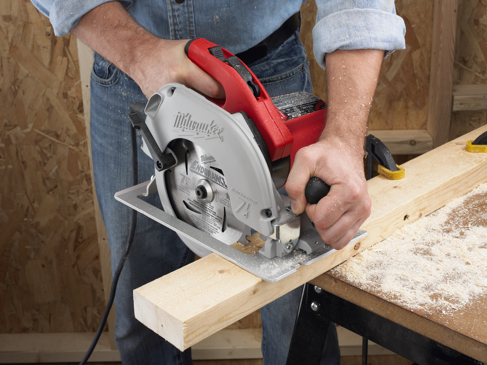
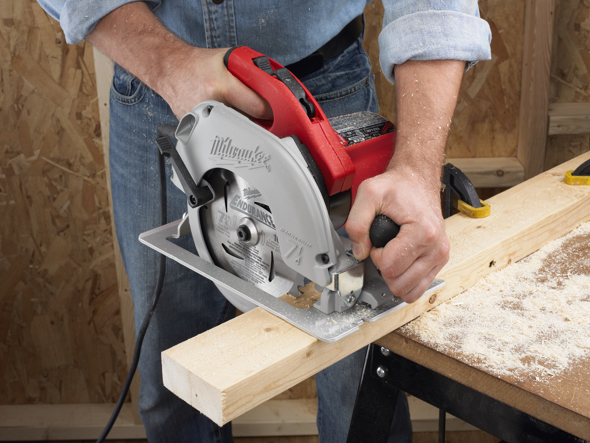

Se ofrece todo tipo de productos todos nuestros productos son de la mas alta calidad
 

Ofrecemos grancantidad de servicios desde entregas a domicilio en ciertas partes ademas de un excelente servicio al cliente
ademas de productos de gran calidad asegurando gran durabilidad para asegurar el que los clientes esten felices con nuetra calidad de herramienta,
servicio al cliente de forma precencial con la mayor calidad de sanidad asegurando la seguridadd de todos nuestros clientes
hacemos todo tipo de servicio y contamos con contratistas para que esten disponibles para su contratacion.